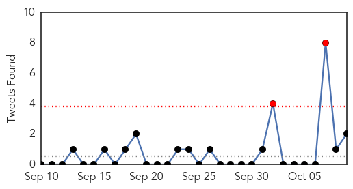
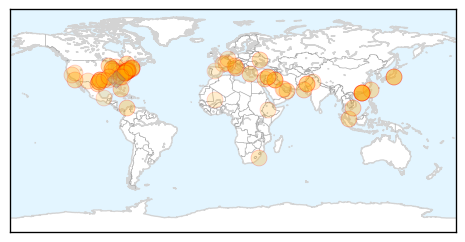
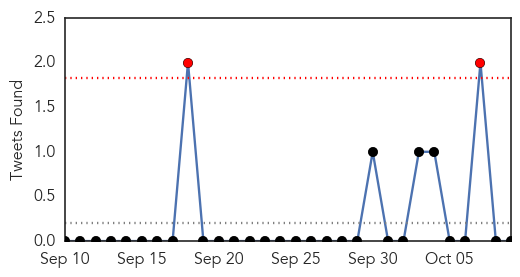

Unknown
30-Day Web Trend
0 alerts, 0 warnings
30-Day Twitter Trend
1 alerts, 0 warnings

Article Locations
Article Confidences
Top Articles:
- 0.991
- Shreveport, LA News, Weather and Sports
- 0.989
- Hackensack University Medical Center doctor talks enterovirus
- 0.989
- Young patient with muscle weakness tests positive for enterovirus D68 at Toronto's Sick Kids hospital
- 0.985
- 4 Things We've Learned About Enterovirus D68, And 1 Mystery
- 0.985
- 4 Things We've Learned About Enterovirus D68, And 1 Mystery
- 0.970
- Azerbaijan tightly controlling avian flu
- 0.969
- Multiple enterovirus-68 cases confirmed in Oregon
- 0.969
- CHEO confirms eight new cases of enterovirus D68
- 0.969
- Common concerns about the flu vaccine
- 0.956
- NC child first flu-related death of season
- 0.940
- WKOW 27: Madison, WI Breaking News, Weather and Sports
- 0.939
- Enterovirus: Parents, teachers and health care workers must work to help prevent an epidemic
- 0.938
- 4 confirmed cases of Enterovirus in Oregon, CDC says
- 0.938
- DOH confirms Enterovirus cases
- 0.935
- Waterloo hospital reports several cases of enterovirus D-68
- 0.921
- Medical officials encourage education to calm enterovirus fears
- 0.917
- Chicago Tribune
- 0.917
- Chicago Tribune
- 0.917
- Chicago Tribune
- 0.917
- Chicago Tribune
- 0.917
- Chicago Tribune
- 0.917
- Chicago Tribune
- 0.917
- Chicago Tribune
- 0.917
- Chicago Tribune
- 0.917
- Chicago Tribune
- 0.917
- Chicago Tribune
- 0.917
- Chicago Tribune
- 0.917
- Chicago Tribune
- 0.917
- Chicago Tribune
- 0.917
- Chicago Tribune
- 0.917
- Chicago Tribune
- 0.917
- Chicago Tribune
- 0.917
- Chicago Tribune
- 0.917
- Chicago Tribune
- 0.917
- Chicago Tribune
- 0.917
- Chicago Tribune
- 0.917
- Chicago Tribune
- 0.917
- Chicago Tribune
- 0.917
- State Ebola test negative for North Texas deputy
- 0.898
- Can you give yourself the flu vaccine?
- 0.897
- Do-it-yourself flu vaccine? Study shows it works
- 0.891
- Do-it-yourself flu vaccine? Study shows it works
- 0.890
- 152 Hunter Ross River virus cases
- 0.888
- Do-it-yourself flu vaccine? Military study suggests people can give themselves the nasal spray
- 0.884
- U.S. child, 4, dies from enterovirus D68
- 0.876
- Eight Infants Test Positive For TB At Texas Hospital
- 0.866
- UN peacekeeper from Pakistan dies in Central African Republic ambush
- 0.866
- Islamic State militants control a third of Syrian town of Kobani -monitoring group
- 0.866
- More Than 120 Elementary School Kids Sick From Suspected Norovirus
- 0.856
- Norovirus Infects More Than 120 At An Indiana Elementary School
Showing top 50 articles...
Top Tweets:
- 0.658
- RT: The flu vaccine provides protection for one flu season. If you got a fluvax last year you'll need another this year http://t.…
- 0.588
- The flu vaccine provides protection for one flu season. If you got a fluvax last year you'll need another this year http://t.co/C72szT69oi
- 0.555
- Flu vaccination can reduce risk of more serious flu outcomes, like hospitalizations & deaths. More on the fluvax http://t.co/Zxb5tmPcbZ
- 0.555
- EV-D68 infections usually end in the fall. And flu season starts! Protect your child & yourself with flu vaccine. http://t.co/RWUMcvAO9O
- 0.520
- An earlier MERS case died in KSA, and no new cases reported today. Death tally in KSA now 324 from 759 reported cases since Sep 2012.
Influenza
30-Day Web Trend
9 alerts, 11 warnings

30-Day Twitter Trend
0 alerts, 0 warnings

Article Locations

Article Confidences
Top Articles:
- 0.999
- Public health officials urge getting immunized for the flu
- 0.997
- UB Reporter: Need to know news and views for UB faculty and staff
- 0.994
- Enterovirus D68: 3 confirmed cases in Multnomah County, 1 in Deschutes
- 0.994
- College campuses prepare for flu season
- 0.993
- Likely more enterovirus in Tennessee than the 2 cases reported
- 0.993
- News, Sports, Jobs and Community Info for Belmont County - Times Leader
- 0.987
- 5 lessons learned from this year's enterovirus D68 — NewsWorks
- 0.982
- Idaho reports first flu-related deaths of 2014
- 0.981
- N.C. Department of Health reports state's first flu death
- 0.980
- 1st Montana flu case of season confirmed in Cascade County
- 0.978
- Hudson County emergency rooms seeing uptick in pediatric visits amid enterovirus D-68 outbreak
- 0.976
- Enterovirus confirmed in Tennessee
- 0.965
- What parents, schools need to know about Enterovirus 68, health official says
- 0.962
- Child is first NC flu-related death of season :: WRAL.com
- 0.945
- Irish flu deaths may top 1,000, HSE warns
- 0.933
- Public Health Recommendations for Influenza Vaccines
- 0.868
- Do-it-yourself vaccines could be game-changer for flu season
- 0.856
- Flu vaccine Oct. 21
- 0.843
- Avian flu vaccine improvements show promise
- 0.831
- WBTV 3 News, Weather, Sports, and Traffic for Charlotte, NC
- 0.705
- Winter is coming: do you really need a flu jab?
- 0.647
- Requiring Employees to Get a Flu Shot Could Land You in Court
Top Tweets:
-
No tweets found for Oct 09, 2014